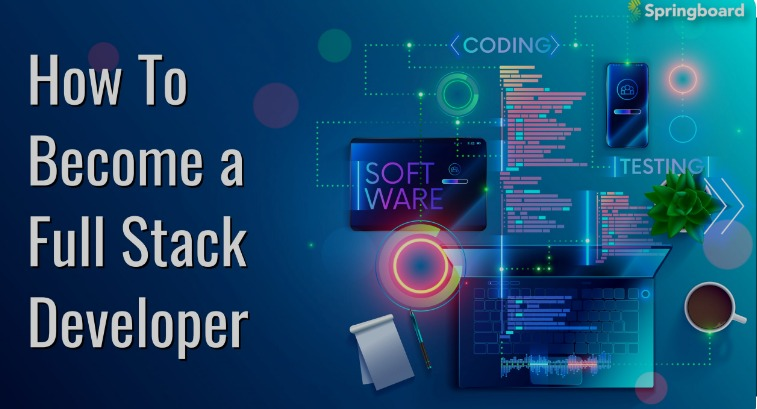
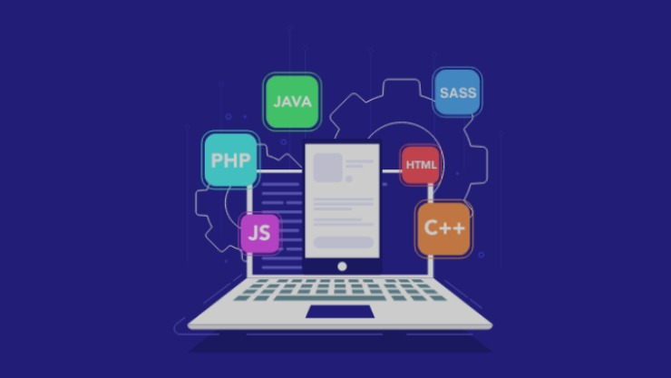

Full Stack Developer Nedir?
Full Stack Developer, Web geliştirici yazılımlar yapar. Mobil- Web yazılımcı olarak çalışır ve ön-arka yüz geliştirici programlar geliştirebilir. Kullanıcının görerek etkileşimde bulunabileceği sistemler geliştirir. Bunun için HTML- CSS ile Java Script bilmek gerekmektedir. Kolay anlaşılabilecek örnek vermek gerekirse, insan vücudu en doğru kaynaktır. İnsan vücudunun iskeleti görevini, HTML olarak kabul edebiliriz.
HTML(Hyper Text Markup Language)’ de Web sitesinin iskeletidir. İnsan vücudunda kaslar ve estetik yapı olarak da CSS sistemi örnek verilebilir. CSS(Cascading Styl Sheets) kas ve estetik dokuların vücuda estetik ve zarafet kattığı gibi siteye görsellik kazandırır. JavaScript sistemi ise, beyin görevi üstlenmektedir. Nasıl yönlendirmek gerektiği ve operasyonun yönetim şeklini belirleyen sistemdir. JS, Web sitesi üzerinde yapılabilecek tüm detayları yöneten oyun değiştirici ve geliştiricidir. JavaScript her geçen gün yenilik ve değişimler kazanarak kullanıcıya pek çok dilde hizmet sunmaktadır.

Full Stack Developer neleri Bilmeli?
Web geliştirici olarak bilinen Full Stack Developer uzmanında aranan özellikler;
Web araçlarını optimum kullanabilme becerisi ve bilgi donanımı bulunmalıdır. Web siteleri özelleştirebilmek için tasarım ve geliştiricilerle işbirliği yapabilmelidir. Yeniden kullanılabilir kod oluşturma yetisine sahip olmalıdır. Geniş kitlelere hitap edebilecek yenilikçi çözümler üretebilecek yaratıcı ve donanımlı ekip çalışması yapabilmelidir. Web sitelerinin hassasiyetini bilerek tüm cihazlara entegre olabildiğinden emin olmalıdır. Web sitesi sayfalarında biçimlendirme dillerini kullanabilmesi Full end Developer uzmanından beklenmektedir.
- • Projeyi veya uygulamayı geliştirmek için doğru teknolojilerin seçilmesine karar verir.
- • HTML, JavaScript ve CSS gibi programlama dillerini bilir ve bu teknolojileri kullanarak geliştirme yapar.
- • Veri tabanlarını ve sunucuları yönetir.
- • Projeyi uçtan uca takip eder ve gerekli düzenlemeleri yapar.
- • Front End ve Back End kısmının test edilmesine yardımcı olur.
- • Diğer geliştiriciler ve tasarımcılar ile iletişim kurar.
- • Proje boyunca Clean Kod (temiz kod) yazar.
- • Teknoloji haberlerini sürekli olarak takip eder. Gelecek teknoloji güncellemelerine nasıl uyum sağlayacaklarını düşünür.